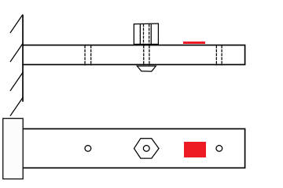
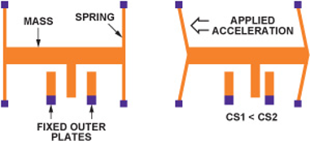

import numpy as np
import matplotlib.pyplot as plt
Laboratory 5 - Background and Resources¶
Introduction¶
In this lab, you will apply many of the skills you have learned over the previous weeks. With your knowledge of FFT, linear regression, and FEM modal analysis, you will develop and implement a method to measure the mass of an object. Your measurement device will be your cantilevered beam, and you will observe the changes in its natural frequencies that result from attaching the object to various pre- defined points on the beam (Figure 1). From these frequency changes, you will deduce the unknown mass.

Figure 1: Diagram of cantilever with unknown mass in position 2 out of 3 total positions. The red area indicates the placement of an accelerometer.
An accelerometer will provide the data describing the motion of the beam. This type of sensor employs a micron-scale spring-mass system (Figure 2). When under acceleration, this mass moves relative to a set of fixed plates, inducing a change in capacitance. This change is proportional to accleration.

Figure 2: Micron-scale sensor used in accelerometers. Under acceleration, the change in capacitances CS1 and CS2 will be proportional to the acceleration.
1. What affects natural frequencies, and how do we measure them?¶
In Lab 3, we saw that the natural frequencies of a cantilever beam can be described using Euler-Bernoulli beam theory:
\(\omega_i=\beta_i^2\sqrt{\frac{EI}{\bar{m}L^4}}\) (1)
where the \(i^{th}\) natural frequency, \(\omega_i\) is given in rad/s, \(\beta_1=1.875104\), \(\beta_2=4.694091\), \(\beta_3=7.854757\), \(\bar{m}\) is the mass per unit length, \(E\) is Young’s modulus, and \(I\) is the second moment of area of the beam.
There are four factors that affect the natural frequency: stiffness (\(E\)), mass (\(\bar{m}\)), second moment of area of cross-section (\(I=bt^3/12\) for rectangular cross-section of \(b\times t\)), and length \(L\). We can see from Equation 1 that adding mass or increasing length will lower the natural frequencies and increasing stiffness or increasing cross-sectional area will raise them.
The accelerometer shown in Figure 2 above will provide an acceleration vs. time curve in response to an impulse applied to the beam. Thanks to the properties of derivatives of harmonic functions, the frequencies present in this acceleration data will be the same as the frequencies that describe the beam’s displacement. In other words - performing a fast Fourier transform on the acceleration signal will reveal the natural frequencies.
2. How can we predict the effects of added mass?¶
In Lab 4, we used Ansys to perform an FEM modal analysis of our beam. It is straightforward to add a so-called “point mass” to our beam model, with a location and magnitude of our choosing. We can re-run the analysis to see the changes in natural frequency due to this added mass. By varying the location and/or magnitude of the mass, we can come up with a picture of the relationship between point mass characteristics and change in the natural frequencies of the beam.
In Lab 2, we used regression analysis to discover the relationship between beam curvataure and applied moment. The same can be done here. For example, we could find a regression expressing mass as a function of change in frequency.
It could be useful to note that curve_fit from the scipy.optimize module can accept a multidimensional array as independent variables. In other words, we can fit two or more inputs to one output. Below, we define a function for use with curve_fit that uses two independent variables (x and y). This is easily extensible to more than two independent variables.
from scipy.optimize import curve_fit #import the appropriate modules
def func(X, a, b): #define our function input (X) and coefficients (a,b),
x,y = X #unpack array X into two variables,
return a*x + b*y #and define the form of the function to fit
Note that the above code block will not do much - we haven’t supplied any data, nor have we called curve_fit.
The data for each independent variable will be a column of an array. They must be of the same length, and must both be the same length as the data array for the dependent variable you wish to fit the curve to. The order matters - the \(i^{th}\) elements of the independent variables must correspond to the \(i^{th}\) element of the dependent.
#Here, OutputData, InputData1, and InputData2 are presumably imported from some data source
dependent_variable = OutputData
independent_variables = (InputData1,InputData2) #This creates a two-column array of our two independent variables
#Using curve_fit to find coefficients a and b of our function defined above.
#It will also return pcov, the covariance matrix
coeff, pcov = curve_fit(func, independent_variables, dependent_variable)
a = coeff[0]
b = coeff[1]
---------------------------------------------------------------------------
NameError Traceback (most recent call last)
/tmp/ipykernel_1880/3775020928.py in <module>
1 #Here, OutputData, InputData1, and InputData2 are presumably imported from some data source
2
----> 3 dependent_variable = OutputData
4 independent_variables = (InputData1,InputData2) #This creates a two-column array of our two independent variables
5
NameError: name 'OutputData' is not defined
Again, the above code block is not executable - we have not supplied OutputData,IndputData1, or InputData2. It should, however, illustrate the procedure for this usage of curve_fit.
It will be possible, with an appropriate regression, to express the unknown mass as a function of natural frequencies. The example we looked at in class was very similar - developing a regression for measuring the thickness of a gold coating on a micro-scale silicon cantilever.
3. How certain can we be of our prediction?¶
In Lab 2, we used propagation of error analysis based on sensitivity indices to determine the contribution of our measurement uncertainties to the overall uncertainty in our estimate of Young’s modulus. For this lab, our uncertainties do not result from measurements. Instead, they primarily result from the “goodness” of our regression model.
Standard error of the fit¶
In Lecture 7, we discussed a standard deviation based on the deviation of each data point predicted by the fit. It is called the standard error of the fit, and can be expressed as:
\(S_{yx} = \sqrt{\frac{\sum_{i=1}^N(y_i - y_{c,i})^2}{\nu}}\) (2)
where \(N\) is the number of data points, \(y_i\) is the measured (in our case found by simulation) value, \(y_{c,i}\) is the value of the data point calculated by the fit, and \(\nu\) is the degrees of freedom of the fit.
\(\nu = N - (m + 1)\) (3)
where \(m\) is the number of coefficients in the regression.
This standard deviation, like any other standard deviation, can be used with Student’s t-distribution to produce a confidence interval for the values calculated using your regression.
\(y = y_c \pm t_{\nu,P}S_{yx}\) \((P\%)\) (4)
where \(y_c\) is the calculated value and \(t_{\nu,P}\) is the t-value corresponding to the degrees of freedom \(\nu\) and desired confidence level \(P\).
The covariance matrix¶
Alternatively, information about the variance of the regression parameters is given by the output of curve_fit. This information is in the form of the “covariance matrix”, and is called pcov in the above example code and in the example code for Lab 2. The diagonal elements of this matrix are the variances of the regression coefficients, in order. Their square roots provide a one-standard-deviation estimate of the uncertainty in the coefficients. Continuing the above example:
a_err = np.sqrt(pcov[0,0])
b_err = np.sqrt(pcov[1,1])
For the example function of \(x\) and \(y\) shown in the above regression,
\(f(x,y) = ax+by\) (5)
The uncertainties in \(a\) and \(b\) (i.e, \(u_a\) and \(u_b\)) are a_err and b_err, respectively. We can use sensitivity indices to estimate the uncertainty in \(f\) due to the uncertainties \(u_a\) and \(u_b\):
\(u_f = \sqrt{(\theta_au_a)^2+(\theta_bu_b)^2}\) (6)
This prediction, however, is not at the common 95% confidence level. Rather, it is a prediction of one standard deviation error in the calculated value. It is a valid estimate of uncertainty, as long as the reader is made aware of what the number indicates.